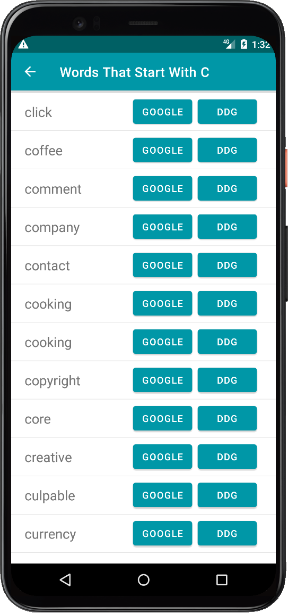

Much of this path centers on the basics of Intents
Research the Serializable interface from Java. An interface related to the type of extras does something similar to Serializable. What interface is that? How are it and Serializable the same, and how are they different?
The MainActivity recommended code uses recyclerView.context when creating LayoutManagers. Find another way to get the context without using recyclerView.context. Prove, by appropriate testing, that this alternate produces exactly the same Context.
The recommended setIcon code uses ContextCompat. What is this class, and why is it not surprising it's in androidx as opposed to android? Rewrite (and shorten!) those lines so as not to use ContextCompat.
In WordAdapter, modify the first line of the class so that the following code will work in onCreateViewHolder. Is the context passed the same as for the original parent.context parameter? Prove this by appropriate logging, and show the logging statement you used.
val layout = LayoutInflater.from(context).inflate(R.layout.item_view, parent, false)
The WordAdapter.onBindViewHolder can be shorteted to these two lines. Add a click handler to make this work.
holder.button.text = filteredWords[position]
holder.button.setOnClickListener(clickHandler)
The LetterAdapter.onBindViewHolder implementation can be shortened to just this one line if you supply an appropriate letterClickListener elsewhere in the file and also move the setOnClickListener call so it's done just once per ViewHolder. Do this
holder.button.text = list.get(position).toString()
Is the initial android:icon value in main_menu.xml actually needed? Test to see if your answer is correct. Why is this so?
Adjust the buttons for word-lookup so that they comprise a TextView giving the word or phrase, followed by Google and DDG buttons that conduct a search on Google or DuckDuckGo for the word/phrase. Also, allow multiword phrases, and properly frame the search request to include spaces between words.

The current implementation randomly chooses a few words from all that begin with the letter in question. Instead, show all words beginning with the letter, and let the RecyclerView scroll through them. Remove duplicate words if there are any, without regard for case (e.g. Craft and craFt are duplicates). Be sure the event handling for Google and DDG works even when scrolled to the bottom. The arrays.xml file is grouped by letter. What happens if it's not? Why?
First, demo your work for me, then:
Submit a Questions.pdf/docx/html with answers to the noncoding questions above
Tag labelled Navigation1 in your git repo.